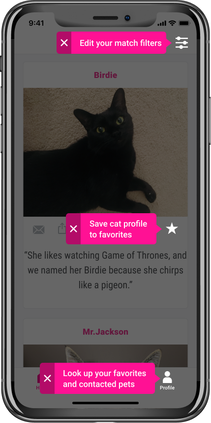

More Than Fluffy
Find your match.

01 Intro
This project started as a pet adoption application, but through early research, I identified that what the market really needed/wanted was an adoption app that was solely about cats.
02 Problem
Currently, 3.2 million cats are waiting at shelters or foster families for their forever home, and the reality is that young and cute kittens get adopted fastest while older and less photogenic cats have to wait a long time for their forever home.
03 Solution
Creating a cat adoption app that matches users with cats based on personality and lifestyle and to give less photogenic and older cats a chance in finding a home.
04 Design Process
Research Highlights
75%
Of the participants would be interested in an app which matches pets to users based on their lifestyle and personality
55%
Don't see the gender of the adoptable pet as an important factor
65%
Say that the location (distance) of the adoptable pet is important for them
40%
Of the participants prefer a small selection of matches
90%
Would like to save cat profiles that they are interested
75%
Want to receive notifications when a new cat arrives which fits their personality and lifestyle
Competitive Analysis
My competitors went a similar route as I, and I realized to stand out it’s necessary to go a different path then they. All of my competitors either did a dog & cat app or an only dog adoption app. None of them prioritized cats, so I found a gap for myself by doing a cat adoption app based on the user's personality and lifestyle.
BarkBuddy
BarkBuddy is a dog adoption app which is taking the same approach as tinder by finding a dog through the swiping technique. The weaknesses are that less photogenic dogs don't have high chances of finding a forever home since it's all about appearances.
PawsLikeMe
PawsLikeMe has a very similar concept as I have with my application. There is a quiz which determines what personality you are looking for in a pet, and based on that quiz, it matches you with pets. The idea is good, but the profiles of the available pets are unsatisfactory most of the time. The pictures are not good quality, and there is not a lot of information you get about the pet's personality. The interface is not very user-friendly, and by improving that, it could lead to a bigger customer base.
Petfinder
Petfinder is the most well known application out of all three competitors. There is a vast selection of adoptable pets, and the interface for the desktop is user-friendly. The interface of the mobile app, on the other hand, isn't excellent. By improving the mobile application and make it more innovative could lead to great opportunities since everything is going mobile.
Personas
Based on my research I identified three main target audiences: Already pet owners who want to add another cat to the family, people who suffer from depression or anxiety and want an emotional support animal, and first time cat owners.


User Stories
To establish necessary features, I created a list of user stories based on potential user tasks. The user stories were refined and prioritized to define a minimum viable product.
As a new user:
- I want to sign up for an account
- I want to take a quiz to find a cat which fits to me
- I want to see a selection of adoptable pets
As a returning user:
- I want to go to my saved list of adoptable cats
- I want to receive notifications about new matches
- I want to read about the cat's quirks and personality traits.
Sitemap and User Flows
Initially, I was planning on creating a quiz, so the user can take it, and based on its answers, he will get a selection of adoptable pets. And besides that, he would as well go through an onboarding experience (asking for location and notifications). But after some additional thinking, I decided not to have a separate quiz and instead to put it into the onboarding process. The reason for it is that I don’t have enough questions to justify having the user taking a quiz AND going through the onboarding as well. Those are too many steps, and I would risk losing users through that.

Wireframe Sketches & User Testing Round 01
To establish necessary features, I created a list of user stories based on potential user tasks. The user stories were refined and prioritized to define a minimum viable product.
Onboarding
The feedback I got pointed out that the writing style comes across distant and not inviting. Also, it got mentioned that there is quite a lot to read.
Conclusion:
- Make the intro and questions shorter and write it friendlier
- Use mellow cat instead of couch buddy
- Implement sliders

As a new user, I want to save a cat profile
The participants seemed unsure if the heart icon is what they have to press. Even after they pushed it, they didn’t know if it got saved or not.
Conclusion:
- Doing an onboarding flow for first-time users
- After pressing the icon a message will appear that the profile got saved to Favorites
- Switching out the heart with a bookmark icon

As a new user, I want to schedule a meet and greet
One of the participants suggested renaming the 'Ask about Birdie' button. He was looking for a 'Meet and Greet' button and thought it's confusing to have it called 'Ask about Birdie'.
Conclusion:
- Change button to 'Meet Me'

As a returning user, I want to go to my saved list of cats
The word 'Discover' seemed confusing for the users, and it appears that this word is not suited for the home screen.
Conclusion:
- Change the word 'Discover' to 'Home'
- Add the 'Profile' icon to the onboarding flow to avoid confusion

As a returning user, I want to edit my preferences
Some participants thought that the preferences are under the profile.
Conclusion:
- Creating an onboarding flow which shows users where the preferences can be modified
Hi-Fi Wireframes
I took the feedback of my testing and created the wireframes in Figma. I made a clickable prototype and moved then on to the hi-fi mockups. While creating the UI, I decided to go back to the wireframes and to change the HOME screen.
Reasoning: The problem I try to solve with my application is to give cats that are less photogenic a chance of getting adopted. That's why I wanted to focus on their personalities and unique quirks. But when I was working on the hi-fi mockups, I realized that I only show the pictures and names of the adoptable cats on the HOME screen.
To get information about their personalities, you have to click on their profiles first. But does that not again benefit cats with better appearances? That's why I decided to rethink my wireframes and change it to show the cat's unique quirks on the HOME screen instead.

Concept and Branding
I named the app 'More Than Fluffy' because people tend to choose which cat to adopt depending on their looks. With my application, I want to focus on their personalities and show that cats are more than just cute and fluffy.
The app name is bold and flashy, and that's why it also needs a vibrant and flashy color to support the feeling and message of the app.
Why I chose hot pink for the call to action color: The color pink is the color of universal love of oneself and others. Pink represents friendship, affection, harmony, inner peace, and approachability. And hot pink is also used to communicate playfulness.
Hi-Fi Mockups
Our goal was to have the user's eyes get drawn immediately to the cat profiles. For that to happen, we worked with light, and neutral colors, and the only pop is the call to action color, which is a flashy hot pink.

User Testing Round 02
For the second round of user testing, I also did three preference tests which helped me to solidify my design choices. The data I collected from the second round of usability testing was useful and helped to make a more seamless and intuitive experience for the user.
Before

After

Onboarding
- The participant changed her mind about an answer, and he wanted to go back to choose a different option, but he wasn't able to.
- The participant pointed out that the ‘Tell us about yourself’ and ‘Let’s talk about your desired cat’ screens are unnecessary.
- The jumps of the progress bar seem not big enough. The participant is expecting the bar to change after every screen.
Conclusion:
- Implement a ‘Go Back’ button
- Incorporate the titles into the screens instead of having them as separate pages
- Change the progress bar from filling up after every segment to after every screen
Before
After
Match Filters
- The participant asked why there is a slider for ‘mellow/active’ section and why for the other sections you have to open another page at first before you can modify the filters.
- What if the user decides to move away?
Conclusion:
- Allow users to change the majority of the filters on the same screen
- Give the option to change the location
Preference Testing
86%
14%
83%

17%
83%

17%
05 Coming Up - Conclusion